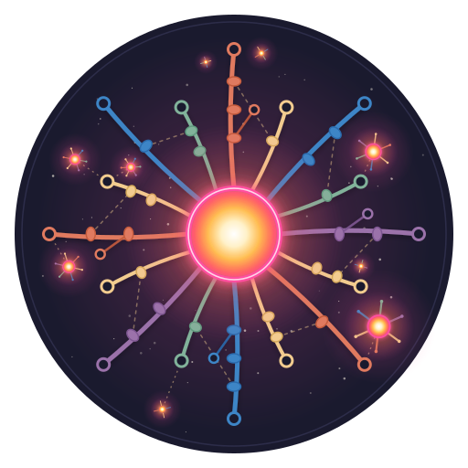

Every fact has a source. Every answer has a date. Intigraph builds knowledge graphs and agent platforms that remember, follow your rules and can show their work.

Coding agents are fast and confident, and they forget. Intigraph puts a governed knowledge store underneath them: rules on every write, history on every read.
Who asserted it, from what evidence, in which change. Facts are retracted, never erased.
Bitemporal by design: ask what an agent believed before a migration, or what was true last quarter.
Shapes live in the store. A write that breaks a rule is refused with a reason, not quietly accepted.
Agents and apps work on their own replica and merge back through the same checks.
Real queries are the pitch. This one asks what an agent believed about a service before a migration, and where each belief came from.
# what did we believe about billing-api before the Sept 30 cutover? quipu read "PREFIX svc: <https://example.com/svc/> SELECT ?property ?value WHERE { svc:billing-api ?property ?value . }" --valid-at 2026-09-29 # same question, as the store recorded it at a given transaction quipu read "..." --tx 153665
A real Quipu store, compiled to WebAssembly and loaded with Quipu's own repository: code, docs and decisions. Ask it questions, walk the graph, and try a write that breaks a rule. Nothing leaves your tab.
Everything a team needs to run it is open source under Apache-2.0, and it already runs a crew of coding agents in production every day.
Quipu is our reference implementation, not a requirement. Most teams already run a graph, a cloud and an agent framework. We work inside what you have.
Domain models in RDF, OWL and SHACL, SPARQL query design, and the rules that keep agent-written data consistent.
Graph plus vector retrieval, entity resolution and provenance, so agents answer from sourced facts instead of guesses.
Agent workflows on AWS (Bedrock, Step Functions, Lambda), MCP tool layers, and coding agents like Claude Code and Codex.
Provenance, policy checks and point-in-time answers for healthcare, finance and other teams that must explain what an agent did.
Intigraph designs, builds and runs agent platforms, on this stack or the one you already run. Engagements are fixed-scope, and you own the code.
How your teams use coding agents today across repos, CI, review and cost. A written roadmap and a live demo on your own code.
One working agent workflow on one repo, with memory, rules and review gates, handed over with docs.
Part of each week inside your team, building and running the platform, then handing it off.
Intigraph is Steve Brown. He builds agent platforms for engineering teams.
Steve has 20+ years in production systems, including 15 at Amazon and AWS, where he drove generative AI adoption in Amazon Security and AWS Applied AI Solutions. At Sema4.ai he was the AI Staff Engineer for the agent platform.
He wrote the Quipu paper on governed knowledge for AI agents, and he runs his own crew of coding agents on the stack every day. Most of what Intigraph sells, he learned by breaking it first.